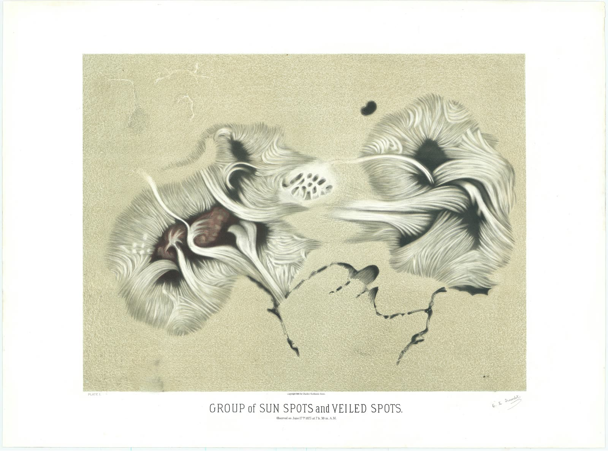
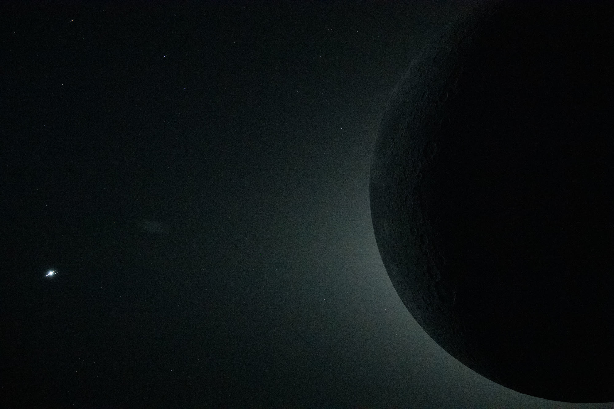
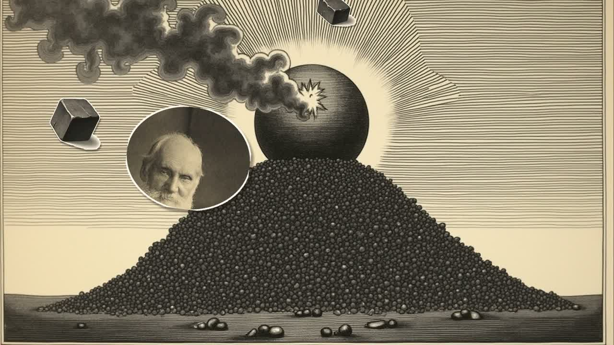
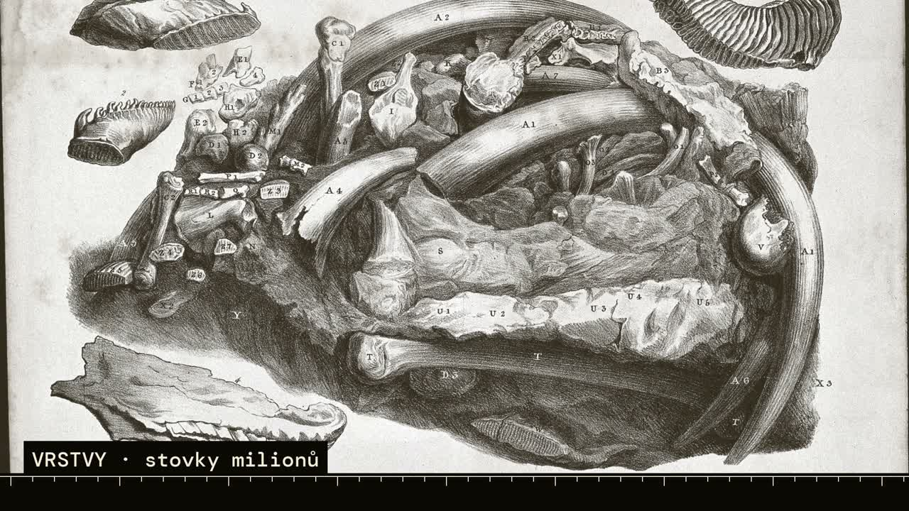
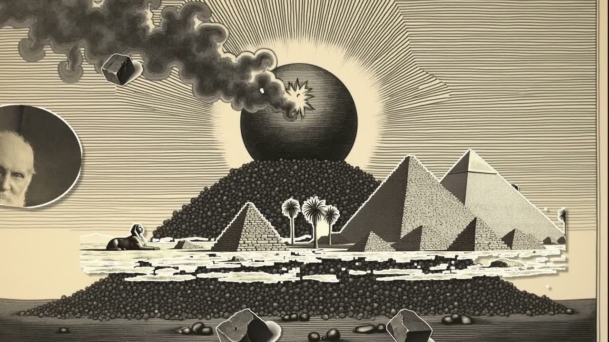
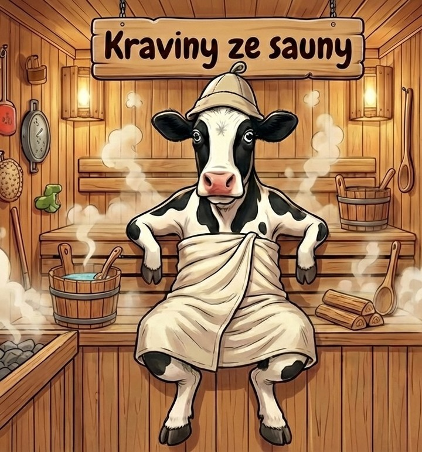

Ceremoniál k úplnému zatmění Slunce
12. SRPNA 2026 · 20:11 · Z ČESKA 86 % · PRVNÍ ÚPLNÉ ZATMĚNÍ VIDITELNÉ Z EVROPY OD ROKU 1999
Slunce vyrobí na kilogram své hmoty 0,19 miliwattu. Ty vyrobíš dva tisíce. Slunce nesvítí proto, že je intenzivní — svítí proto, že je obludně velké.
Tenhle ceremoniál je o tom, jak jsme na tohle a podobné věci přišli: o sporu, který trval čtyřicet let, o fyzikovi, který se mýlil, a o náhodě, díky které je zatmění vůbec možné — a která už nikdy nebude tak těsná.

Sto otázek o Slunci. Každou vysvětlujeme třikrát — pro batole obrazem, pro teenagera mechanismem, pro Einsteina rovnicí. A pak ještě jednou: kde ta rovnice přestává platit.
Ta čtvrtá vrstva je jediný důvod, proč to není encyklopedie. Encyklopedie ti řekne odpověď. My ti řekneme i to, kam až sahá.
Osm oblastí, osm věcí, na které si můžeš sáhnout. Každá ukazuje něco, co se textem říct nedá.
Nastav sklon dráhy Měsíce na 0° a zatmění je každý nov — dvanáctkrát do roka a naprosto obyčejné. Vrať skutečných 5,145° a spadne to na dvě až pět. Celá vzácnost jevu visí na jednom úhlu.
Měsíc se vzdaluje 3,8 cm za rok. Posuň se o 600 milionů let dopředu a koróna zmizí navždy.
Přepni na klasickou fyziku a počítadlo reakcí spadne na nulu. Ne na málo — na nulu.
Tahem za posuvník si vyrobíš vlastní nobelovskou senzaci. A pak ji zrušíš.
Uhelný sloupec je na obrazovce neviditelný.
Pára nad kamny, vlny od větru, pruhy v mracích a okraj sluneční granule. Čtyři jevy přes devět řádů, jedna rovnice.

Tři písně. Vystřihovánková animace z rytin 19. století, montáž na časové ose a skutečné záběry Slunce z dalekohledu DKIST.



Vybráno z knihy návštěv. Při každém načtení stránky jiné.

Chodí sem lidi, kterým jsme slíbili saunu — a místo toho dostanou patnáct minut o vazebné energii. Občas si stěžují. A mají pravdu.
Formuláře na stížnosti se připravují.
Snímky zatmění: koróna 2024 — Brucewaters, CC BY 4.0 · Artemis II — NASA · koróna 2017 — Bernd Thaller, CC BY 2.0. Další snímky Slunce: NASA · ESA · ESO (P. Horálek, M. Druckmüller) · NSF / NSO / AURA (Daniel K. Inouye Solar Telescope). Historické rytiny: Wikimedia Commons, Wellcome Collection, Smithsonian Open Access, NYPL Digital Collections — 42 položek s ověřenou licencí a evidencí původu.
Nejnovější objev, na kterém ceremoniál stojí: Kuridze et al., Ubiquitous Kelvin–Helmholtz instabilities driving plasma mixing on the Sun, Nature (2026) — DKIST rozlišil na Slunci detaily o velikosti 20 km.